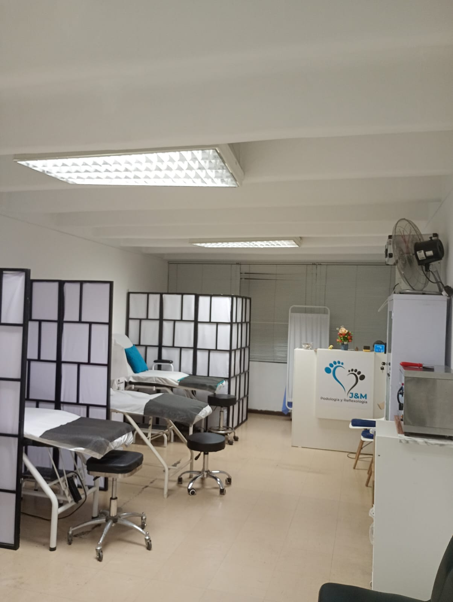
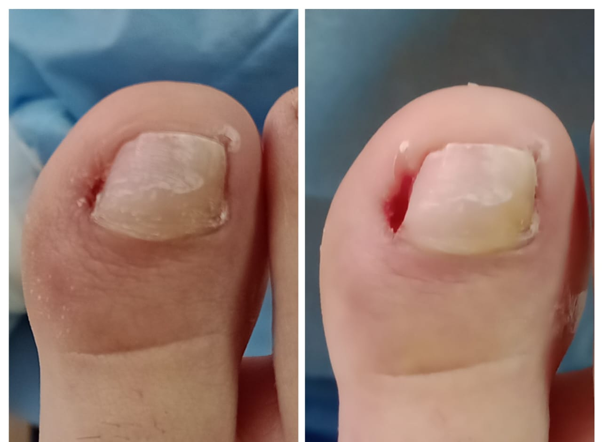

Podología Geriátrica
Cuidado especializado y delicado para mantener la salud y comodidad de los pies en adultos mayores.
Recupera el placer de caminar sin molestias. Tratamientos clínicos de élite, tecnología láser y reflexología en el corazón de Miraflores.

Cada detalle de nuestra clínica está pensado para brindarte la experiencia más segura y efectiva.
Equipos láser y herramientas clínicas certificadas para resultados rápidos y seguros.
Protocolos de higiene rigurosos en cada sesión. Tu seguridad es nuestra máxima prioridad.
Profesionales con formación clínica avanzada y años de experiencia en podología.
Tratamientos diseñados específicamente para las necesidades de cada paciente.
Profesionales certificados y formación continua en podología clínica y estética podal.
Atención podológica personalizada para acompañarte con seguridad, experiencia y cercanía.
Cuidado especializado y delicado para mantener la salud y comodidad de los pies en adultos mayores.
Atención enfocada en las necesidades del pie activo, para que sigas avanzando con confianza.
Evaluación y acompañamiento podológico pensado para el bienestar de los más pequeños.
Valoración y cuidado profesional de alteraciones cutáneas, callosidades y helomas.
Tratamiento indoloro de última generación para onicomicosis (hongos) y verrugas plantares. Resultados visibles desde la primera sesión sin tiempo de recuperación.
 Clínico
Clínico
Alivio inmediato aplicando técnicas clínicas especializadas. Atendemos urgencias con cita el mismo día en nuestro consultorio de Miraflores.

ClínicoCirugía menor ambulatoria para corregir definitivamente el crecimiento anormal de la uña. Solución permanente con anestesia local y recuperación rápida.
Reconstrucción estética que protege la lámina ungueal mientras se recupera tu uña natural. Resultado visualmente impecable desde el primer día.
Terapia de puntos de presión en los pies para estimular órganos y sistemas del cuerpo. Equilibrio, relajación profunda y bienestar integral en una sesión.
Diagnóstico y tratamiento integral de patologías del pie. Atención personalizada con productos especializados y los más altos estándares clínicos.
 Estética
Estética
Línea premium seleccionada por nuestros especialistas para el cuidado diario de tus pies en casa. Resultados clínicos garantizados.
 Clínico
Clínico
Monitoreamos tu recuperación para asegurar resultados duraderos. Control y seguimiento después de la curación de uñero.
Uña completamente reconstruida, estética y protegida. Así luce el resultado final de nuestro tratamiento de acrílico medicado.
Visítanos en Miraflores y experimenta la diferencia de una atención personalizada y de élite.